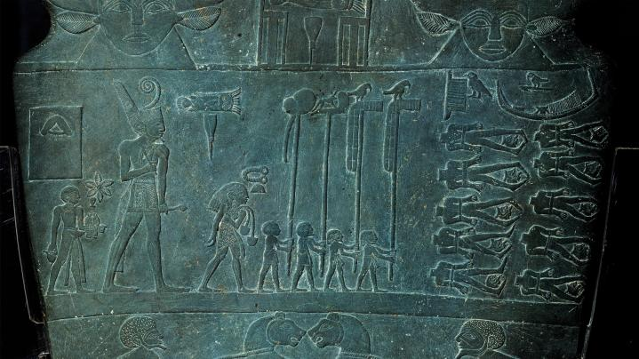

History & Culture
How a stranger's kindness helped give us the Big Bang Theory
Read
Photography Photo of the day

31 archival photos that will ignite your curiosity
see photos
Magazine Proof

These artist transform garbage into garb to take a stand
Read
Today's Picks
Science
How drugmakers come up with names like Viagra and Lunesta
Travel

these indie theaters shine a spotlight on Asian stories
Animals
Monarchs may be doing better than thought, study suggests
History & Culture

Shipwreck of royal 'party boat' revealed
History Magazine
Who was Egypt's first pharaoh?
Magazine

Thier homes are sinking fast. Can their community survive?